Mastermind Circles
This project focused on leadership development, facilitation, and personal growth rather than technical engineering design.
With the Liberators, I co-founded Mastermind Circles, a student-led program within Cornell’s Engineering Leadership Certification Program. We wanted to help students get unstuck on goals they cared about through weekly conversations, practical tools, and a group that would hold them accountable.
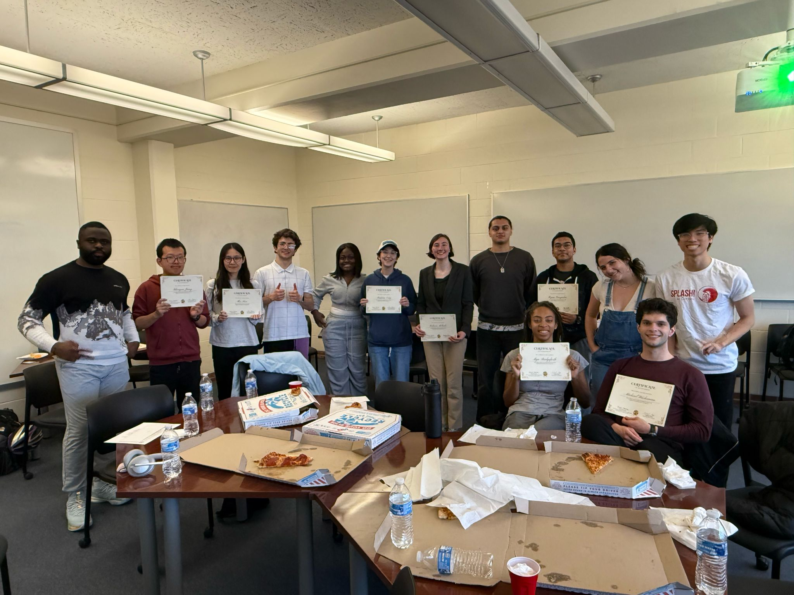
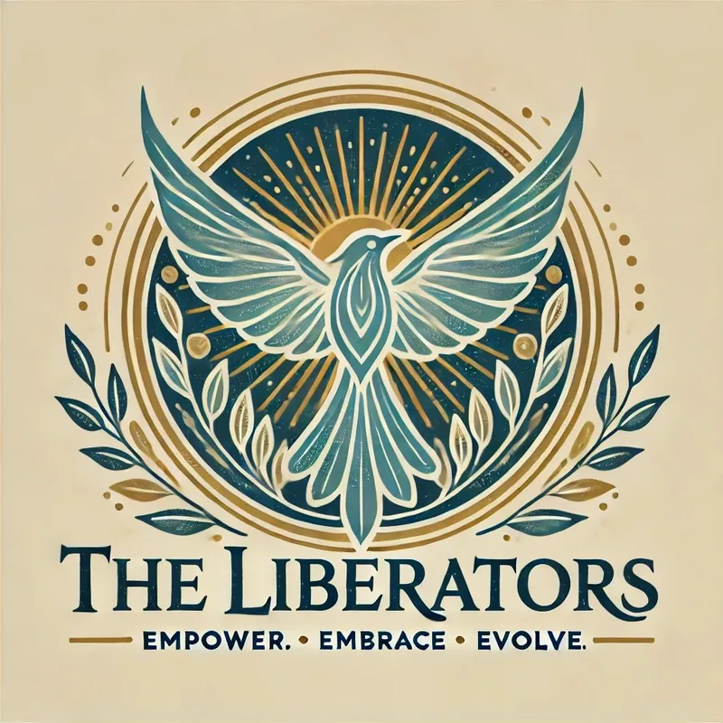
The Liberators
After we learned more and reflected deeper about ourselves we were matched with others who held similar goals and I was part of the Liberators!
We want to help everyone enjoy life to the fullest by breaking past their pre-conceived notions of what is and isn't possible.
My time with the group has been amazing. We are all committed to each other's growth and to our idea of helping others by allowing them to help themselves. After hours and hours of meeting with the group and our advisors, and people with experience in this area we were able to solidify our ideas and convey that information in a presentation for the end of the semester!
How the circles worked
We developed a ten-week Spring 2025 program with four peer-facilitated circles. Weekly meetings lasted roughly 1¼–2 hours. They started with a check-in, followed by a short tool-discovery lesson and an exercise to try it out. Then members talked through their goals, what went well, what got in the way, and what they wanted to commit to before the next meeting.
The point was not just to give advice. Members could ask questions, share resources, and help each other think through a problem from a different angle. The program emphasized listening, constructive feedback, and confidentiality, with members choosing how much they wanted to share.
My role and our collaboration
I co-created the program with Marco La Vecchia, Michael Ngo, and Natalina Putrino, and served as a circle facilitator during Spring 2025. As a team, we prepared the weekly presentations and exercises and met for debriefs to discuss what worked, what did not, and how we could support each other as facilitators. Our preparation included COMPASS mentor-training material.
The selected slide images below show the core tools and prompts we used. The curriculum moved from setting a goal to understanding why it mattered, making decisions, working through roadblocks, and reflecting on progress.
What worked and what we would change
Our final project report recorded 17 participants across four circles, with 11 receiving certificates after meeting the attendance requirements. The circles held eight or nine meetings each, and we brought the groups together for an end-of-program celebration. Participants described accountability and being intentional about their goals as valuable parts of the experience.
There were challenges on our side too. Our team initially tried to consult everyone on nearly every decision, and some planning meetings stretched past five hours. We moved toward clearer ownership of tasks and agendas with time estimates. We also put more emphasis on sharing work based on each person’s capacity rather than giving everyone the same number of tasks.
The final report recommends keeping circles smaller, choosing tools that fit each group, and encouraging connections outside the weekly meetings. Self-feedback was especially difficult for participants to apply, which was a useful reminder that a tool can sound good in a presentation and still need adjusting in practice.
Tools we practiced
The gallery highlights eight tools from our sessions: SMART goals, high-bar/low-bar planning, core values, yes/no charts, question storming, SBI self-feedback, commitments versus convictions, and inner critic versus inner champion. These are selected teaching slides, rather than full session decks or participants’ personal responses.
Team and sources
The Liberators: Antranig Baghdassarian, Marco La Vecchia, Michael Ngo, and Natalina Putrino. This page draws on our program description, Leadership Purpose Project Report, final presentation, and original session decks. The project report credits mentors Rob Parker, Karel Hilversum, Erica Dawson, Daniel Toronto, Myrian Alarcón, Myra Phillips, and Karen Williams, alongside the Engineering Leadership Program and course teaching assistants.
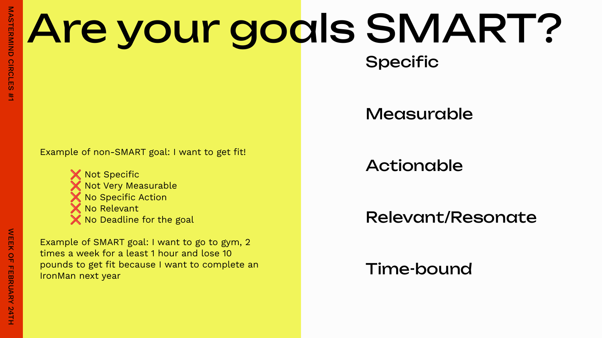
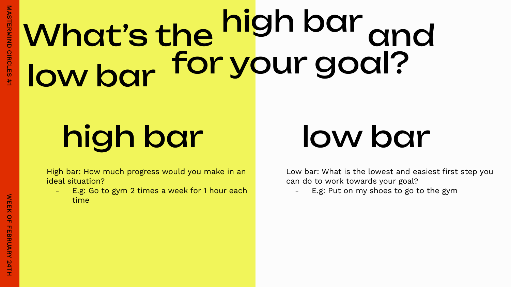
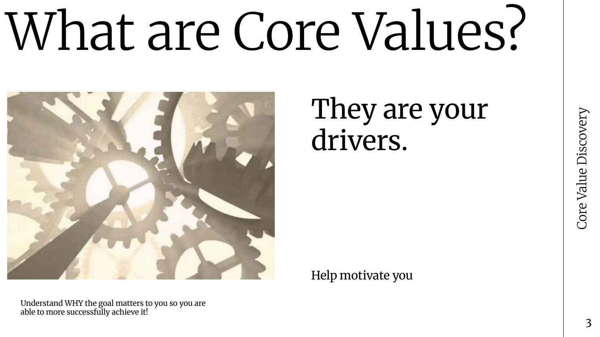
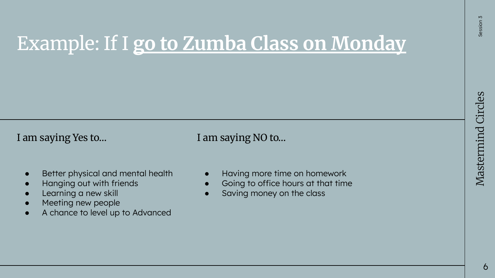
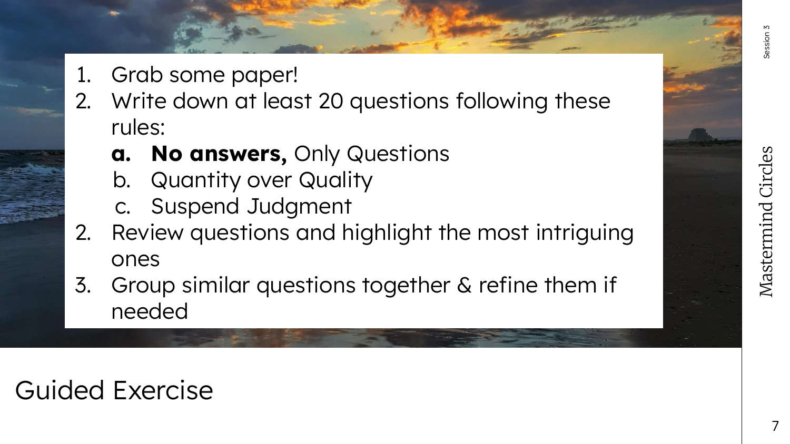
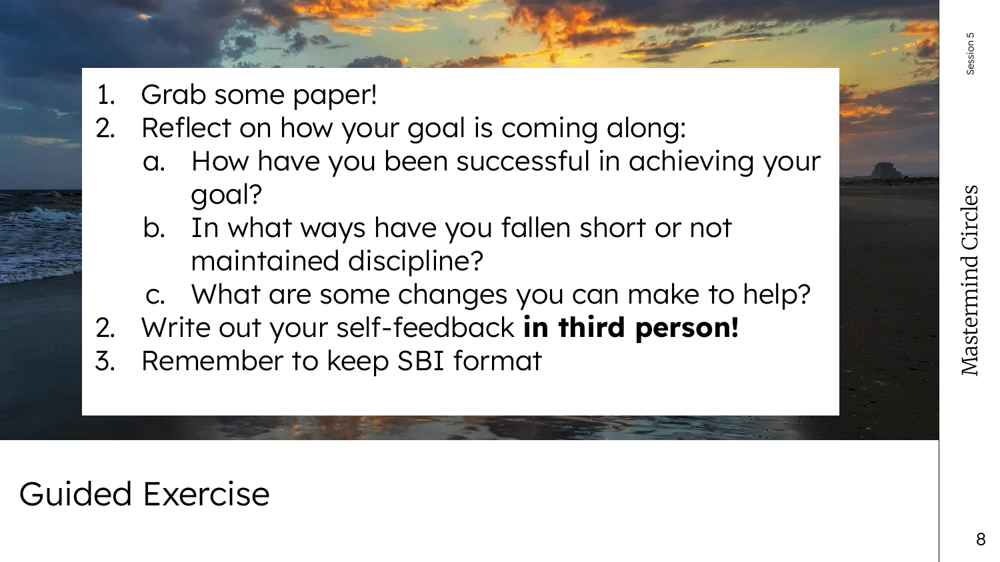
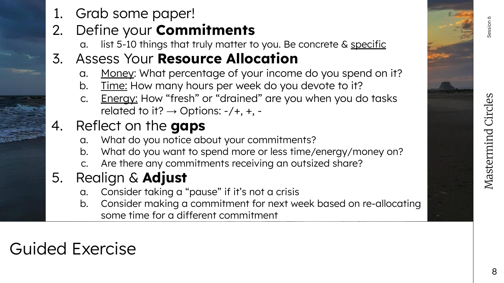
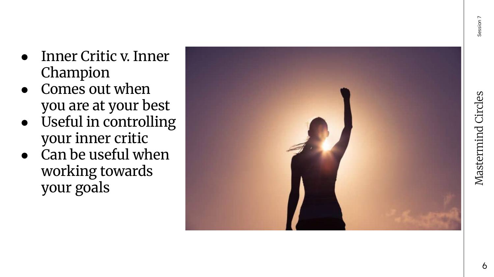
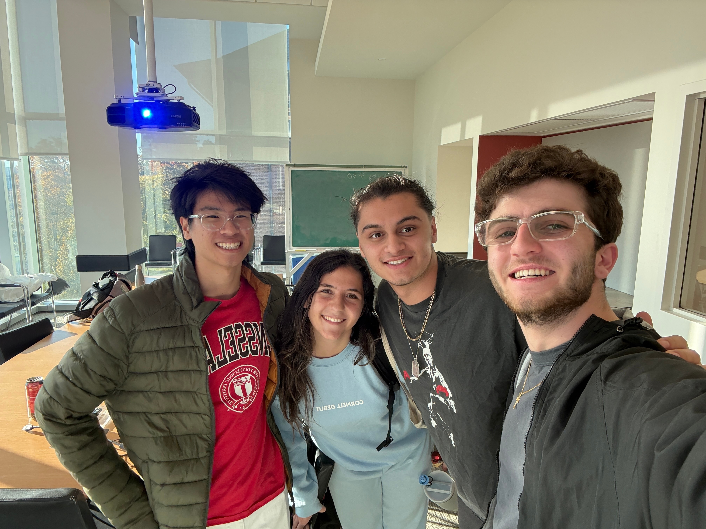